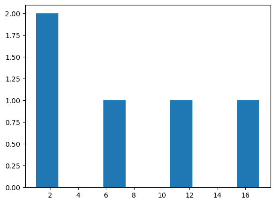
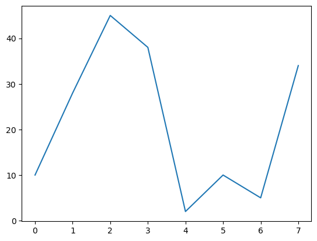

import time Module 05
DS 5100 | Summer 2024 | Residential
Time
Exercise 5.1
Write a for loop to build a list containing the integers 1 to 100,000 where all odd numbers have negative sign
Time the code using time().
Print out the result time delta.
t0 = time.time()
vals = []
for i in range(1, 100001):
if i % 2 == 1:
i *= -1
vals.append(i)
print('runtime: ', time.time() - t0)runtime: 0.01307368278503418Exercise 5.2
Write a list comprehension to build the list, and time it using time()
Remember: While we put the for loop before if statements, it is different with if else statements.
if else statements precede a for loop in a list comprehension.
t0 = time.time()
vals = [i * -1 if i % 2 == 1 else i for i in range(1,100001)]
print('runtime: ', time.time() - t0)runtime: 0.007518768310546875With a lambda function …
t0 = time.time()
vals = [(lambda x: x * -1 if i % 2 == 1 else x)(i) for i in range(1, 100001)]
print('runtime: ', time.time() - t0)runtime: 0.0173189640045166# valsNumPy
import numpy as npExercise 5.3
Use NumPy to generate \(10\) random integers ranging from \(1\) to \(6\) inclusive.
Save the results in a list and then print the list as a comma-delimitted string.
Hint: Use NumPy’s random.randint() function.
Hint: ', '.join(my_list_like)
# np.random.randint?randint(low, high=None, size=None, dtype=int)
randos = np.random.randint(1, 7, 10)print(', '.join(randos).astype(str))TypeError: sequence item 0: expected str instance, numpy.int64 foundtype(randos)numpy.ndarrayrandos.astype(str))SyntaxError: unmatched ')' (512353796.py, line 1)Exercise 5.4
Use random.randomint() to generate a single random integer and print the type of the result.
Then generate \(5\) random integers between \(1\) and \(21\) and print the type of the result.
What difference do you see?
r1 = np.random.randint(10)type(r1)intr2 = np.random.randint(1, 21, 5)type(r2)numpy.ndarrayExercise 5.5
Plot a histogram of the array for random integers you just created.
Hint: Import Matplotlib’s Histogram function as follows:
from matplotlib.pyplot import histThen pass the array to hist().
from matplotlib.pyplot import histhist(r2)(array([2., 0., 0., 1., 0., 0., 1., 0., 0., 1.]),
array([ 1. , 2.6, 4.2, 5.8, 7.4, 9. , 10.6, 12.2, 13.8, 15.4, 17. ]),
<BarContainer object of 10 artists>)
Use a trailing semi-colon to eliminate the text.
hist(r2);
Exercise 5.6
Generate and print a matrix (2D array) of random normals of shape \(2 \times 3\).
Hint: np.random.randn(m, n) samples from the standard normal distribution and generates an m by n matrix.
x = np.random.randn(2, 3)xarray([[ 1.27215403, -0.09185841, -0.37278817],
[ 0.15453746, 0.96258071, -0.8547112 ]])Exercise 5.7
Multiply the matrix you just created by \(2\).
In linear algebra, this is called “scaling” the matrix.
x * 2array([[ 2.54430807, -0.18371682, -0.74557633],
[ 0.30907492, 1.92516141, -1.70942241]])Exercise 5.8
Now add the matrix to itself.
x + xarray([[ 2.54430807, -0.18371682, -0.74557633],
[ 0.30907492, 1.92516141, -1.70942241]])Exercise 5.9
Now get a matrix of reciprocals.
Note: this is not the same as a reciprocal of a matrix.
1 / xarray([[ 0.78606833, -10.88631924, -2.68248858],
[ 6.47092302, 1.03887393, -1.16998583]])# np.linalg.inv(x) # This is used to get the reciprocal, or inverse, of a matrixExercise 5.10
Create two two-dimensional arrays.
One of \(0\)s and one of \(1\)s.
Both of shape \(2 \times 4\).
my_shape = (2, 4)z1 = np.zeros(my_shape)z1array([[0., 0., 0., 0.],
[0., 0., 0., 0.]])o1 = np.ones(my_shape)o1array([[1., 1., 1., 1.],
[1., 1., 1., 1.]])Exercise 5.11
Create an identity matrix with \(4\) rows and columns.
np.identity(4)array([[1., 0., 0., 0.],
[0., 1., 0., 0.],
[0., 0., 1., 0.],
[0., 0., 0., 1.]])Note that identity matrices are square.
Exercise 5.12
Generate a vector of random numbers of length \(5\).
Then print a slice that consists of \(3\) elements, beginning with the second element.
Then print a slice that excludes the first and last elements.
x12 = np.random.randn(5)x12array([-0.20266496, 0.19059664, -0.41064497, -0.3492225 , 0.14831958])x12[1:4]array([ 0.19059664, -0.41064497, -0.3492225 ])x12[1:-1]array([ 0.19059664, -0.41064497, -0.3492225 ])Exercise 5.13
From the last array you created, select all elements \(> 0.15\).
What is it called when you filter an array in this manner?
That is, using truth values in the indexer.
x12[x12 > 0.15]array([0.19059664])This is called ‘boolean indexing’.
Consider the boolean array:
bool_idx = x12 > .15bool_idxarray([False, True, False, False, False])And this is our original array:
x12array([-0.20266496, 0.19059664, -0.41064497, -0.3492225 , 0.14831958])So, boolean indexing is something like:
[a for a, b in zip(x12, bool_idx) if b][0.19059663613877315]Or:
[x for x in x12 * bool_idx if x][0.19059663613877315]Exercise 5.14
Generate a 2D array of random numbers with a shape of \(3 \times 3\).
Then, select the all the rows but the first, and all the columns but the last.
x14 = np.random.randn(3,3)x14array([[-0.71092828, -0.45263172, -1.60650309],
[-0.15522386, -0.75890669, 1.55023292],
[-1.18031566, 0.70695363, 0.08966593]])x14[1:, :-1]array([[-0.15522386, -0.75890669],
[-1.18031566, 0.70695363]])x14[1:, :2]array([[-0.15522386, -0.75890669],
[-1.18031566, 0.70695363]])Exercise 5.15
Write code to generate a new array based on the previous array and which sets all negative values to 0.
The second array should be based on a copy of the first.
Then print both arrays.
x15 = x14.copy()
x15[x15 < 0] = 0x14array([[-0.71092828, -0.45263172, -1.60650309],
[-0.15522386, -0.75890669, 1.55023292],
[-1.18031566, 0.70695363, 0.08966593]])x15array([[0. , 0. , 0. ],
[0. , 0. , 1.55023292],
[0. , 0.70695363, 0.08966593]])Exercise 5.16
Write a function called roll_dice() that returns a sorted 1D list of integers of length n for a die of m sides.
- Each integer is from \(1\) to \(m\) inclusive.
- Make the default value of
m\(6\). - Give the user the option to return the results in reverse sort order. Set the default value to
False. - Return the results as a list.
Then * Run it so that it rolls a \(6\)-sided die \(10\) times. Print results with reverse sorting. * Run it so that it rolls a \(12\)-sided die \(10\) times. Print results with no sorting.
def roll_dice(n, m=6, sort=False, reverse=False):
'''
This function returns a sorted list of integers of length n.
Each integer is from 1 to 6 inclusive.
'''
x = np.random.randint(1, m+1, n)
if sort:
return sorted(x, reverse=reverse)
else:
return list(x)game1 = roll_dice(10, sort=True, reverse=True)game1[6, 5, 4, 4, 3, 3, 2, 1, 1, 1]game2 = roll_dice(10, 12)game2[7, 6, 5, 11, 4, 3, 10, 3, 11, 1]Exercise 5.17
Make a plot showing an example play where where \(m = 50\), \(n = 8\), and sorting is turned off.
from matplotlib.pyplot import plotplot(roll_dice(8, 50));
Exercise 5.18
Write a NumPy program to compute the eigenvalues and eigenvectors of a given square array.
m = np.mat("3 -2;1 0")
print(m)[[ 3 -2]
[ 1 0]]w, v = np.linalg.eig(m)
print( "Eigenvalues:",w)
print( "Eigenvectors:",v)Eigenvalues: [2. 1.]
Eigenvectors: [[0.89442719 0.70710678]
[0.4472136 0.70710678]]Exercise 5.19
Create two 2D matrices \(p\) and \(q\) by hand, each of shape \(2 \times 2\).
Then multiply them.
p = [[1, 0], [0, 1]]
q = [[1, 2], [3, 4]]print('p:', p)
print('q:', q)p: [[1, 0], [0, 1]]
q: [[1, 2], [3, 4]]result1 = np.dot(p, q)
print(result1)[[1 2]
[3 4]]result2 = np.dot(q, p)
print(result2)[[1 2]
[3 4]]Exercise 5.20
Use NumPy to calculate the difference between the maximum and the minimum values of a given array along the second axis.
Expected Output:
Original array:
[
[0, 1, 2, 3, 4, 5],
[6, 7, 8, 9, 10, 11]
]Difference between the maximum and the minimum values of the said array:
[5, 5]x = np.arange(12).reshape((2, 6))
print(x.shape)
print(x)(2, 6)
[[ 0 1 2 3 4 5]
[ 6 7 8 9 10 11]]Here are max and min along the first axis (cols)
np.amax(x, axis=0), np.amin(x, axis=0)(array([ 6, 7, 8, 9, 10, 11]), array([0, 1, 2, 3, 4, 5]))Here are max and min along the second axis (rows)
np.amax(x, axis=1), np.amin(x, axis=1)(array([ 5, 11]), array([0, 6]))r1 = np.amax(x, axis=1) - np.amin(x, axis=1)
print(r1)[5 5]r2 = np.ptp(x, axis=1)
print(r2)[5 5]np.allclose(r1, r2) TrueExercise 5.21
Use NumPy to sort a given array by the 2nd column.
Original array:
[
[1, 5, 0],
[3, 2, 5],
[8, 7, 6]
]Sorted array:
[
[3, 2, 5],
[1, 5, 0],
[8, 7, 6]
]nums = np.random.randint(0,10,(3,3))
print(nums)[[7 0 1]
[6 9 0]
[6 3 0]]print(nums[nums[:,1].argsort()])[[7 0 1]
[6 3 0]
[6 9 0]]Exercise 5.22
Use NumPy to find the norm of a matrix or vector.
v = np.arange(7)
vnorm = np.linalg.norm(v)
print(v)
print("Vector norm:", vnorm)[0 1 2 3 4 5 6]
Vector norm: 9.539392014169456m = np.matrix('1, 2; 3, 4')
mnorm = np.linalg.norm(m)
print(m)
print("Matrix norm:", mnorm)[[1 2]
[3 4]]
Matrix norm: 5.477225575051661np.linalg.norm?Signature: np.linalg.norm(x, ord=None, axis=None, keepdims=False) Docstring: Matrix or vector norm. This function is able to return one of eight different matrix norms, or one of an infinite number of vector norms (described below), depending on the value of the ``ord`` parameter. Parameters ---------- x : array_like Input array. If `axis` is None, `x` must be 1-D or 2-D, unless `ord` is None. If both `axis` and `ord` are None, the 2-norm of ``x.ravel`` will be returned. ord : {non-zero int, inf, -inf, 'fro', 'nuc'}, optional Order of the norm (see table under ``Notes``). inf means numpy's `inf` object. The default is None. axis : {None, int, 2-tuple of ints}, optional. If `axis` is an integer, it specifies the axis of `x` along which to compute the vector norms. If `axis` is a 2-tuple, it specifies the axes that hold 2-D matrices, and the matrix norms of these matrices are computed. If `axis` is None then either a vector norm (when `x` is 1-D) or a matrix norm (when `x` is 2-D) is returned. The default is None. .. versionadded:: 1.8.0 keepdims : bool, optional If this is set to True, the axes which are normed over are left in the result as dimensions with size one. With this option the result will broadcast correctly against the original `x`. .. versionadded:: 1.10.0 Returns ------- n : float or ndarray Norm of the matrix or vector(s). See Also -------- scipy.linalg.norm : Similar function in SciPy. Notes ----- For values of ``ord < 1``, the result is, strictly speaking, not a mathematical 'norm', but it may still be useful for various numerical purposes. The following norms can be calculated: ===== ============================ ========================== ord norm for matrices norm for vectors ===== ============================ ========================== None Frobenius norm 2-norm 'fro' Frobenius norm -- 'nuc' nuclear norm -- inf max(sum(abs(x), axis=1)) max(abs(x)) -inf min(sum(abs(x), axis=1)) min(abs(x)) 0 -- sum(x != 0) 1 max(sum(abs(x), axis=0)) as below -1 min(sum(abs(x), axis=0)) as below 2 2-norm (largest sing. value) as below -2 smallest singular value as below other -- sum(abs(x)**ord)**(1./ord) ===== ============================ ========================== The Frobenius norm is given by [1]_: :math:`||A||_F = [\sum_{i,j} abs(a_{i,j})^2]^{1/2}` The nuclear norm is the sum of the singular values. Both the Frobenius and nuclear norm orders are only defined for matrices and raise a ValueError when ``x.ndim != 2``. References ---------- .. [1] G. H. Golub and C. F. Van Loan, *Matrix Computations*, Baltimore, MD, Johns Hopkins University Press, 1985, pg. 15 Examples -------- >>> from numpy import linalg as LA >>> a = np.arange(9) - 4 >>> a array([-4, -3, -2, ..., 2, 3, 4]) >>> b = a.reshape((3, 3)) >>> b array([[-4, -3, -2], [-1, 0, 1], [ 2, 3, 4]]) >>> LA.norm(a) 7.745966692414834 >>> LA.norm(b) 7.745966692414834 >>> LA.norm(b, 'fro') 7.745966692414834 >>> LA.norm(a, np.inf) 4.0 >>> LA.norm(b, np.inf) 9.0 >>> LA.norm(a, -np.inf) 0.0 >>> LA.norm(b, -np.inf) 2.0 >>> LA.norm(a, 1) 20.0 >>> LA.norm(b, 1) 7.0 >>> LA.norm(a, -1) -4.6566128774142013e-010 >>> LA.norm(b, -1) 6.0 >>> LA.norm(a, 2) 7.745966692414834 >>> LA.norm(b, 2) 7.3484692283495345 >>> LA.norm(a, -2) 0.0 >>> LA.norm(b, -2) 1.8570331885190563e-016 # may vary >>> LA.norm(a, 3) 5.8480354764257312 # may vary >>> LA.norm(a, -3) 0.0 Using the `axis` argument to compute vector norms: >>> c = np.array([[ 1, 2, 3], ... [-1, 1, 4]]) >>> LA.norm(c, axis=0) array([ 1.41421356, 2.23606798, 5. ]) >>> LA.norm(c, axis=1) array([ 3.74165739, 4.24264069]) >>> LA.norm(c, ord=1, axis=1) array([ 6., 6.]) Using the `axis` argument to compute matrix norms: >>> m = np.arange(8).reshape(2,2,2) >>> LA.norm(m, axis=(1,2)) array([ 3.74165739, 11.22497216]) >>> LA.norm(m[0, :, :]), LA.norm(m[1, :, :]) (3.7416573867739413, 11.224972160321824) File: /apps/software/standard/core/jupyterlab/3.6.3-py3.11/lib/python3.11/site-packages/numpy/linalg/linalg.py Type: function
Exercise 5.23
Use NumPy to calculate the QR decomposition of a given matrix.
m = np.array([[1,2],[3,4]])
print(m)[[1 2]
[3 4]]result = np.linalg.qr(m)
print(result)(array([[-0.31622777, -0.9486833 ],
[-0.9486833 , 0.31622777]]), array([[-3.16227766, -4.42718872],
[ 0. , -0.63245553]]))